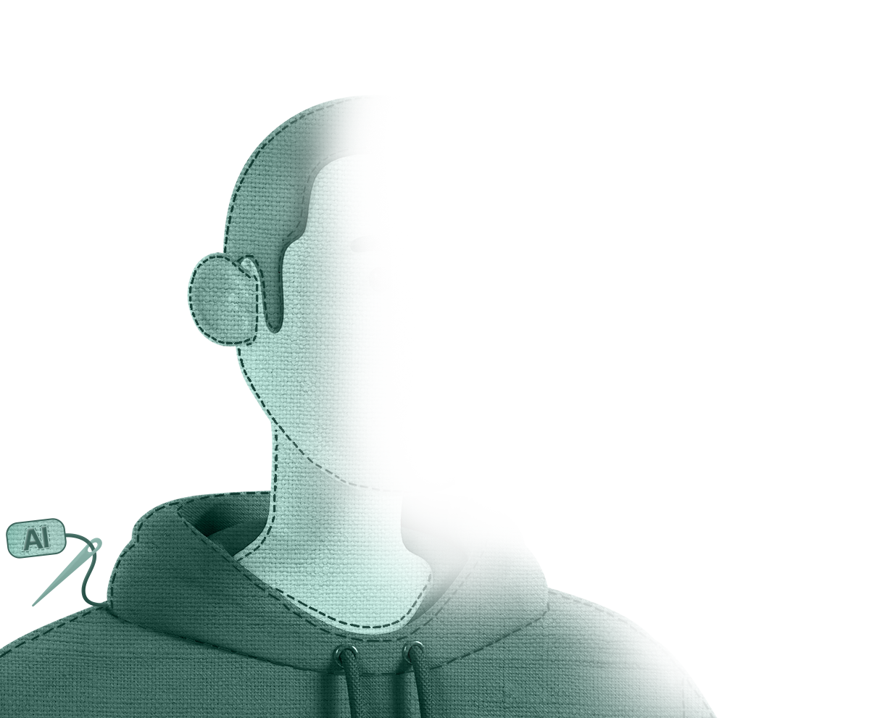
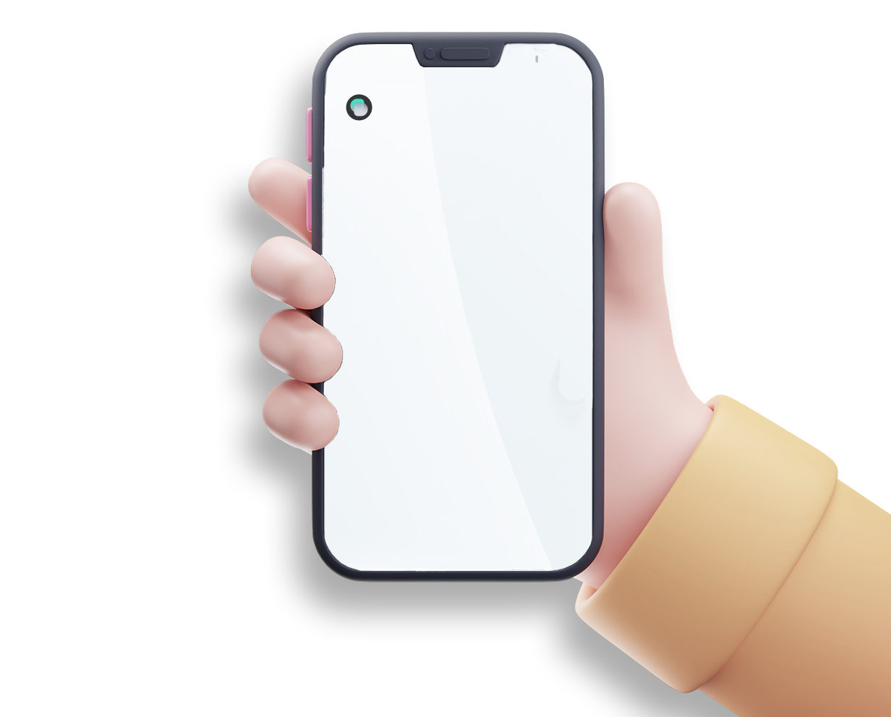
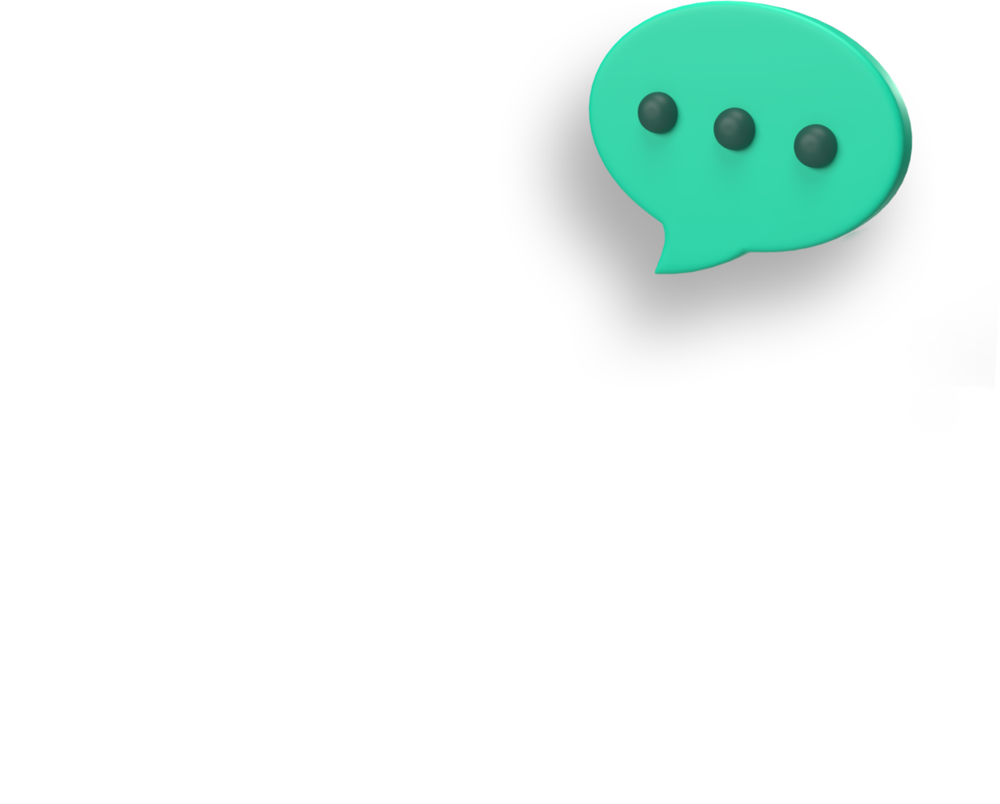

AI 음성 캐스팅 솔루션
내 콘텐츠에
연기자가
다양한 성우가
1인 多역이
필요할 때
연기자가
다양한 성우가
1인 多역이
Easily create and cast characters for your content using artificial intelligence technology. You no longer need filming equipment and booking a recording studio.
스티치 스튜디오만의 AI 디지털 전환 기술을 통해, 이제는 개인 크리에이터도 다양한 모델, 성우와 함께 녹음실, 촬영장을 사용할 수 있게 됩니다.
스티치 스튜디오의 역할
웹 기반 녹음 · 촬영 스튜디오
웹사이트 안에서 간편하게 콘텐츠 제작에 필요한 인물을 섭외하고 음성, 모습 등을 연출할 수 있습니다.
스티치 스튜디오의 인물 캐스팅
인물 복제를 통한 디지털 에셋화
실제 인물의 음성, 모습을 쉽게 데이터로 전환하고 관리 및 AI 기능을 사용할 수 있습니다.
- 새 에셋 생성
- 인물 학습
- 에셋 관리
- 에셋 사용
디지털 휴먼 캐스팅이라는 미래
디지털 휴먼을 섭외하고 콘텐츠 연출을 감독하는 미래
Easily create and cast characters for your content using artificial intelligence technology. You no longer need filming equipment and booking a recording studio.
스티치 스튜디오만의 AI 디지털 전환 기술을 통해, 이제는 개인 크리에이터도 다양한 모델, 성우와 함께 녹음실, 촬영장을 사용할 수 있게 됩니다.



